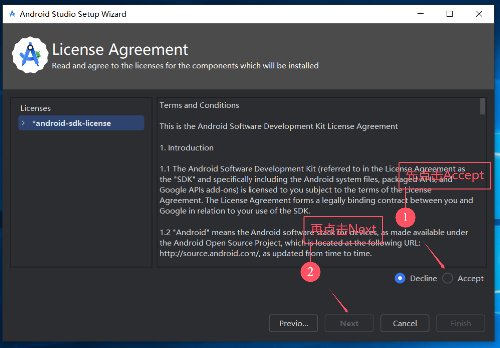
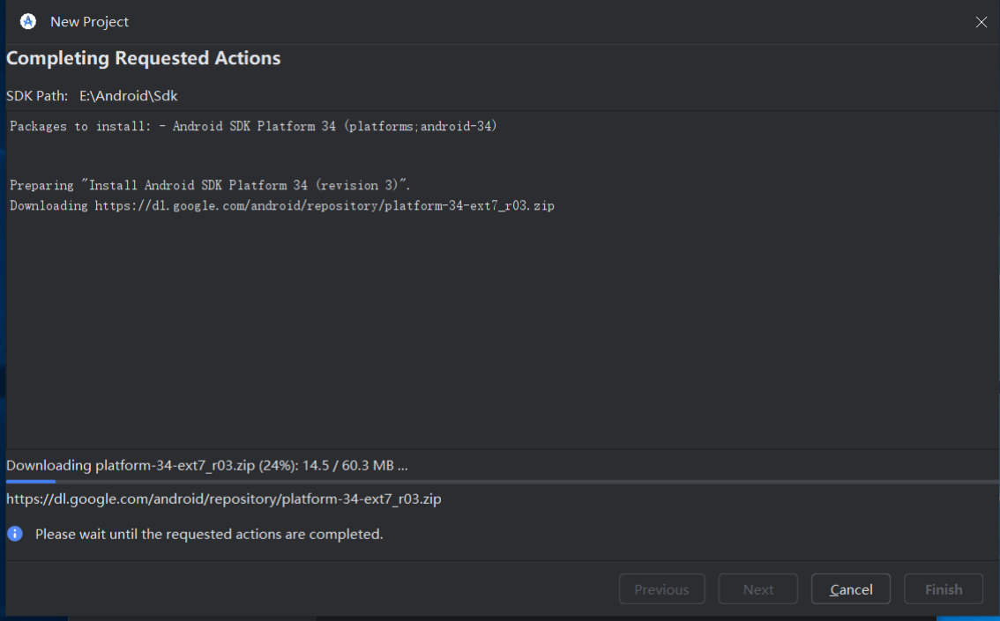
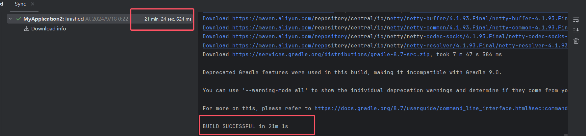

第一周任务
Android Studio Java开发环境配置
以下教程基于 Android Studio2024版本安装环境SDK、Gradle配置(文字版) 、 Android Studio2024版本安装环境SDK、Gradle配置(视频版) 这两个教程，针对科学上网进行优化，避免部分不必要的换源操作。
安装目录搭建 (避免将Android Studio 安装在默认目录，方便管理)
D:\Android # 这里可以改为C盘或者其他盘都行
├── Android Studio/ # Android Studio 程序安装目录
├── AndroidStudioProjects/ # Android 项目文件目录
├── GradleRepository/ # Gradle 本地依赖仓库
└── SDK/ # Android SDK 目录

图1：配置完环境后的目录
目录说明：
Android Studio: IDE程序本体安装目录AndroidStudioProjects: 默认的项目存放目录，包含所有Android项目GradleRepository: Gradle依赖包的本地缓存目录SDK: Android SDK的安装目录，包含各版本SDK工具和平台
注意事项：
- 建议将整个Android开发环境放在同一个根目录下便于管理
- 路径中避免使用中文和特殊字符
- 建议安装在非系统盘，保证足够的存储空间
Android Studio 下载与安装
确保在开始安装之前已经按照上一步新建好文件夹了。此步骤仅仅只是安装这个IDE，环境还没配置好，所以安装完成后先不用直接打开。
点击右边链接下载 android-studio-2024.1.2.12-windows.exe安装包。

图1：找到安装包位置并双击运行

图2：修改安装目录为D:\Android\Android Studio

图3：等待安装完成时取消勾选"Start Android Studio"，然后点击Finsh
JDK 安装与环境变量配置
已经在电脑中安装过JDK的仍然建议为统一JDK版本，额外安装一遍。
(1) JDK安装
点击右边链接下载 JDK17直链下载,然后找到你下载的压缩包位置。
图1：我下载的位置
将这个压缩包解压到目录C:\。然后确认你的C盘根目录下是否存在下图所示文件夹(名字应当是完全一样的)。

目录结构：
C:\
└── jdk-17.0.1
(2) JDK 环境变量配置
命令行配置 (已经验证有效，强烈建议使用此脚本!!!!!!!!!!!!!)
以管理员身份打开 PowerShell（右键点击 PowerShell 图标，选择"以管理员身份运行"），然后复制粘贴以下命令：
# 设置 JAVA_HOME 环境变量
$javaHome = "C:\jdk-17.0.1"
[Environment]::SetEnvironmentVariable("JAVA_HOME", $javaHome, "Machine")
# 将 Java bin 目录添加到 PATH 环境变量,并添加到环境变量列表的最前端以覆盖其他jdk。
$path = [Environment]::GetEnvironmentVariable("Path", "Machine")
$javaBin = "$javaHome\bin"
[Environment]::SetEnvironmentVariable("Path", "$javaBin;$path", "Machine")
# 验证环境变量是否设置成功
Write-Host "JAVA_HOME 已设置为: $([Environment]::GetEnvironmentVariable('JAVA_HOME', 'Machine'))" -ForegroundColor Green
Write-Host "Java 已添加到 PATH 中" -ForegroundColor Green
配置完成后，重新打开命令提示符或 PowerShell 窗口，输入 java -version 确认 JDK 是否正确配置。你应该能看到类似以下输出：
openjdk version "17.0.1" 2021-10-19
OpenJDK Runtime Environment (build 17.0.1+12-39)
OpenJDK 64-Bit Server VM (build 17.0.1+12-39, mixed mode, sharing)
注意：
- 如果命令执行后提示权限错误，请确保以管理员身份运行 PowerShell
- 设置环境变量后需要重新打开命令行窗口才能生效
常规windows设置配置
参照JDK环境配置.
SDK 配置
SDK安装
-
打开刚刚安装完但是没有打开过的Android Studio。稍等片刻，看到弹出下图界面，点击
Don't Sent.

-
如果你是第一次打开，
稍等片刻后你会碰到如下图所示弹窗，取消即可。

-
然后点击上图中的
Next,跳到如下界面，修改 SDK location 为你前面准备的安装目录

-
然后点击
Next,出现下图界面后继续点击NExt,然后再弹出的界面中选择Accept。

 -
然后等待弹出下面的界面，点击
Finish。

-
然后进入软件，出现下图界面。

-
这时直接叉掉这个界面，继续后面的步骤以配置SDK环境变量
SDK环境变量配置
PowerShell 脚本配置 (建议使用此方法，但是必须认真阅读该方法说明)
以管理员身份打开 PowerShell，然后复制粘贴以下命令，然后必须修改$androidHome 为你自己创建的目录，接着再将修改后的代码粘贴到命令行中运行。
# 设置Android SDK 存放的根目录
$androidHome = "<你的SDK文件夹路径>" # 根据你的实际安装路径修改,我的是"C:\Android\SDK"
# 向系统环境变量中添加 ANDROID_HOME
[Environment]::SetEnvironmentVariable("ANDROID_HOME", $androidHome, "Machine")
# 向 系统 Path 中添加 Android 工具路径
$path = [Environment]::GetEnvironmentVariable("Path", "Machine")
$platformTools = "$androidHome\platform-tools"
$tools = "$androidHome\tools"
# 检查并添加路径(如果不存在)
if (-not $path.Contains($platformTools)) {
$path = "$path;$platformTools"
}
if (-not $path.Contains($tools)) {
$path = "$path;$tools"
}
# 更新Path环境变量
[Environment]::SetEnvironmentVariable("Path", $path, "Machine")
# 验证环境变量
Write-Host "ANDROID_HOME 已设置为: $([Environment]::GetEnvironmentVariable('ANDROID_HOME', 'Machine'))" -ForegroundColor Green
Write-Host "Android 工具已添加到 PATH 中" -ForegroundColor Green
配置完成后，重新打开命令提示符或 PowerShell 窗口，输入以下命令验证安装：
adb version
你应该能看到类似以下输出：
Android Debug Bridge version 1.0.41
Version 35.0.2-12147458
Installed as C:\Android\SDK\platform-tools\adb.exe
Running on Windows 10.0.22631
注意：
- 请确保将
$androidHome变量中的路径替换为你实际安装 SDK 的路径- 设置环境变量后需要重新打开命令行窗口才能生效
图形化配置
参照原教程
Gradle 构建工具配置 （很多坑点，但主要是网络环境问题）
重新打开 Android Studio，然后检查下面的设置是否自动调整准确


进行Gradle下载和GradleRepository依赖库下载


下面的已经在之前的目录准备中创建了。



接下来的操作有所不同，如果你有科学上网，那么请不要点击停止，等待自动安装完成。

